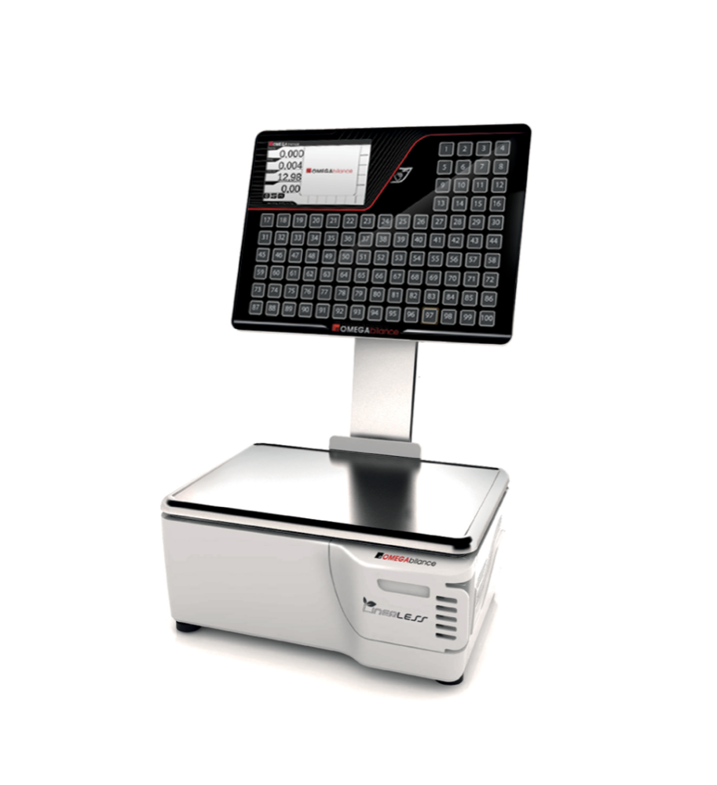

Problemi frequenti
Le situazioni che capitano davvero al banco e i primi passi da fare prima di chiamare l'assistenza.

Sintomi e rimedi
| Problema | Cosa fare | Chi avvisare |
|---|---|---|
| Il numero non avanza | Riprova una volta; controlla che il mouse o la bilancia siano collegati | Responsabile del punto vendita |
| Il monitor è nero | Controlla che il PC sia acceso e il cavo del monitor inserito | Responsabile o assistenza |
| Il numero è sbagliato | Usa Indietro -1 e richiama il numero corretto | — |
| Il cliente non sente | Alza il volume del monitor o delle casse; richiama il numero | Responsabile se persiste |
| Il ticket esce bianco | Controlla il rotolo e richiudilo bene; stampa una prova | Assistenza se continua |
| La coda è ferma su tutti i reparti | Non chiudere l'applicazione: segnala subito | Assistenza tecnica |
Non riavviare il PC
Un riavvio durante il servizio interrompe il monitor e la coda. Se il problema non si risolve con un richiamo, chiama il responsabile: il riavvio è un'operazione dell'assistenza.
Come segnalare un problema
- Reparto e numero del turno interessato.
- Ora in cui è successo.
- Cosa hai fatto prima (chiamata, richiamo, azzeramento).
- Fotografia del monitor o del ticket, se possibile.
Regola semplice
Se il problema riguarda solo il tuo banco, è della postazione. Se riguarda tutti i reparti, è del sistema: in quel caso non toccare nulla e avvisa l'assistenza.
Guida MyEliminaCode Supermercati · Windows 1.4.0
Documento statico, consultabile senza connessione